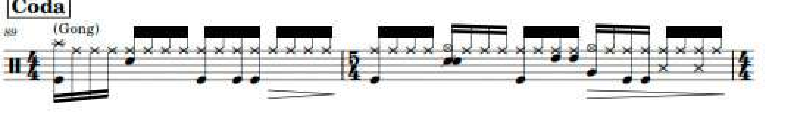
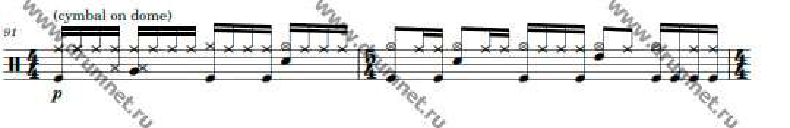

Frank Zappa, Joe's Garage Act III. Songsterr s35881, drum track, Vinnie Colaiuta. Twenty-nine tom events were handed from the chart read to the stem session on 2026-09-08. This page gives every one of them a status. Built 2026-09-08.
The chart read produced 179 tom noteheads and handed 29 of them to the stem session for testing. That session returned verdicts on 20 of the 29 and marked the remaining 9 UNTESTABLE, because the alignment anchors stop at notation second 462.9 and the clock drifts by 165 to 773 milliseconds past that point.
Nine heads with no verdict is an open item, so this pass went after it from the stems. Four of the nine are now refuted, on a measurement that does not need a clock at all. The other five stay without a verdict, and the reason is now measured rather than assumed.
| Group | Heads | Status | Evidence |
|---|---|---|---|
| GP bar 25, the ten-note run | 10 | MOOT | Brandon wrote 8 of them by hand 26 minutes after the import. The stem supports 8 to 9 at every threshold. Nothing left to add. |
| GP bar 95 | 4 | REFUTED | Position-matched test returns 0 of 4 at every threshold down to 0.2 percent of stem peak, where the detector finds 2,049 onsets across the song. Refuted for absence, not for quietness. |
| GP bar 97 | 6 | 4 WEAK | Four supported at 0.2 percent of peak, two of those also at 5 percent. A real find carrying weak evidence, and it should ship labelled that way. |
| GP bars 99, 100, 101 | 5 | NO VERDICT | Bar-level tom presence does not discriminate these from chart-empty bars in the same region, at 1.15x. Clock drift exceeds one sixteenth, so no position test is available. See below. |
| GP bars 103, 104 | 4 | NO VERDICT | All four confirmed by eye as filled ovals on the G line at 8x. A constant-tempo clock placed both bars after the kit stops at 538.9 s, and the chart's closing fermata invalidates that placement. |
Ten moot, four refuted, two firm, four weak, nine without a verdict. That accounts for all 29.
Peak band energy per second, taken straight off each stem with no threshold and no alignment. The kick falls from 48.3 to 0.016 across one second boundary. The toms fall from 17.5 to 0.41, and the hi-hat from 56.1 to 10.6.
| stem second | toms | kick | snare | cymbals | hat | reading |
|---|---|---|---|---|---|---|
| 535 | 20.43 | 34.33 | 0.005 | 16.02 | 0.10 | kit playing |
| 536 | 2.00 | 65.84 | 0.010 | 24.06 | 0.01 | kit playing |
| 537 | 17.54 | 48.29 | 0.000 | 11.49 | 25.34 | kit playing |
| 538 | 2.11 | 43.93 | 0.000 | 7.95 | 56.11 | last bar of playing |
| 539 | 0.41 | 0.016 | 0.000 | 3.70 | 10.56 | kick and toms gone |
| 540 | 0.14 | 0.016 | 0.000 | 3.14 | 1.82 | cymbal ring-out only |
| 541 | 0.021 | 0.016 | 0.000 | 7.51 | 1.27 | cymbal ring-out only |
| 543 | 0.00002 | 0.016 | 0.000 | 0.21 | 0.015 | silence |
| 545 | 0.005 | 0.024 | 0.005 | 0.04 | 0.010 | end of file, 545.27 s |
The tempting move is to count tom attacks inside each bar and call a bar supported when the count is above zero. That test was built and it fails its own control.
The in-region control is the set of Coda bars the chart marks empty: GP 93, 94, 96, 98 and 102. Those bars should return nothing. They return as much as the claimed bars do.
| threshold | chart-tom bars | chart-empty bars | ratio | result |
|---|---|---|---|---|
| 5 percent of peak | 3.00 | 2.60 | 1.15x | FAIL, under the 1.5x floor |
| 2 percent | 5.40 | 5.00 | 1.08x | FAIL |
| 1 percent | 9.00 | 8.20 | 1.10x | FAIL |
Counting all seven claimed bars together, including the two dead ones, the ratio drops to 0.82x, which is below chance. There are real tom attacks scattered through the Coda, 17 of them at the strict 5 percent threshold between 506 and 541 seconds. They land in bars the chart marks empty as often as in bars it marks with toms.
A position-matched test would be the stronger instrument, and it is unavailable here. Clock drift in this region runs 165 to 773 milliseconds. One sixteenth note at the verified tempo is 267.9 milliseconds. The uncertainty is wider than the grid spacing, so a head cannot be assigned to its slot.
The final detector thresholds on a fraction of the song's global tom-flux peak, which is the protocol the stem session used. Window counts are then comparable to each other and to their table.
| window | 5% | 2% | 1% | 0.5% | 0.2% | role |
|---|---|---|---|---|---|---|
| 541 to 545 s, song over | 0 | 0 | 0 | 0 | 0 | negative control, clean |
| 496 to 501 s, toms quiet | 0 | 0 | 1 | 1 | 2 | negative control |
| 486 to 496 s, toms audible | 9 | 16 | 19 | 21 | 28 | positive control |
| 506 to 541 s, the Coda | 17 | 33 | 61 | 96 | 131 | the region under test |
The notation clock for this tab runs at quarter equals 56. The tempo automation stores 56 against a half-note unit, and reading that as a quarter-note value doubles the tempo. Bar 93 is a 4/4 bar spanning 447.857 to 452.143 seconds in notation time, which is 1.0714 seconds per quarter and confirms 56 directly.
At 56 the 105 bars occupy 8 minutes 26 seconds, which fits a track running 9 minutes 5 seconds. At 112 they would occupy 4 minutes 13 seconds, which does not. One sixteenth note is 267.9 milliseconds, and any earlier figure of 133.9 is the doubled reading.
The first build tested 29 chart tom heads and stopped there. It did not put the repaired artifact through the transfer gate, it used a global tempo rule rather than local calibration, and it never matched cymbals one to one. All three ran on 2026-09-08 and all three returned something.
Ledger built from the actual artifact diff, RESTORED-s35881-TEXTSAFE-v2.gp against CHART-TOMS-s35881-Brandon-edit.gp, scope set to drum track index 8. The diff is 179 added tom instances, matching the chart read exactly at 46 on midi 43, 98 on midi 48, 35 on midi 50.
| Check | Result |
|---|---|
| artifact hash matches the file tested | PASS 9737d4ef629ca775 |
| both artifacts are materialized files | PASS |
| no edit is still PROPOSED | PASS |
| every applied edit reached VALIDATED | FAIL 179 applied, 0 validated |
| at least one VALIDATED edit exists | FAIL 0 validated |
| alignment CONFIRMED ahead of any stem timing use | FAIL UNRESOLVED past GP bar 97 |
| a playability result was supplied | FAIL none supplied |
| regression: nothing outside scope moved, something inside did | PASS 2765 out-of-scope instances identical, 179 in scope |
Brandon hand-wrote 8 tom notes in GP bar 25. Matched one to one against the tom stem under the mir_eval convention, so one transient cannot validate several written notes.
| threshold | stem attacks | matched of 8 | busiest window |
|---|---|---|---|
| 5.0 percent of peak | 15 | 7 | 1 |
| 2.0 percent | 25 | 8 | 1 |
| 1.0 percent | 32 | 8 | 1 |
| 0.5 percent | 34 | 8 | 1 |
All eight signed residuals are negative: -119.6, -97.5, -58.0, -76.6, -112.6, -49.9, -56.9, -98.7 ms. Median -87.1 ms with a standard deviation of 25.3 ms. The median is more than twice the spread, so this is a constant clock offset rather than performance scatter. The stem attacks arrive 87 ms ahead of where the alignment map puts them.
Fresh attacks read from the cymbal stem with tr_audio.cymbal_events, which separates a new stroke from a decaying resonant bed. Over the whole file: 1663 candidates, 908 NEW_ATTACK, 442 UNRESOLVED, against 1778 written cymbal events.
| GP bar | written | fresh attacks | matched 1:1 | reading |
|---|---|---|---|---|
| 5 | 20 | 5 | 4 | 16 unmatched |
| 14 | 15 | 8 | 7 | 8 unmatched |
| 25 | 20 | 7 | 5 | 15 unmatched |
| 85 | 20 | 9 | 6 | 14 unmatched |
| 93 | 20 | 12 | 4 | 16 unmatched |
| 95 | 20 | 13 | 9 | 11 unmatched |
| 97 | 20 | 1 | 0 | 20 unmatched |
| 99, 100, 101, 103 | 75 | 0 | 0 | all unmatched |


Revision r8968524 stands on the copy tab s6857183. Nothing on this page has been uploaded anywhere. Three routes are open and the evidence now sits beside each one.
| Route | What it means now |
|---|---|
| Leave r8968524 as it stands | The two firm heads in bar 97 stay out. The eight refuted heads stay out, which is correct. Nothing further is written. |
| Fold in what survived | Two firm heads in GP bar 97, plus four more there carrying weak evidence and labelled as weak. The eight refuted heads are dropped. The five without a verdict are held back. |
| Roll back to a toms-only file | Returns to CHART-TOMS-s35881-Brandon-edit.gp, which adds 179 chart toms and leaves voice 0 byte-identical. The kit rewrite in r8968524 goes away with it. |